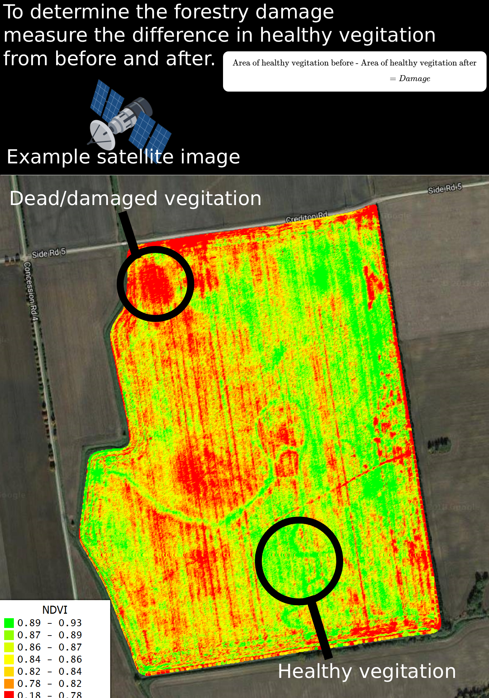
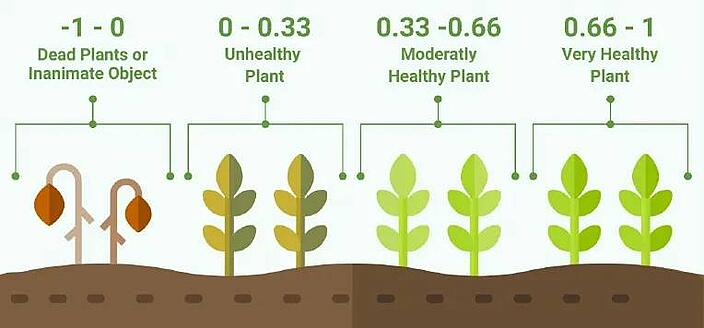

Evaluation
| Design Objective | Outcome | Evidence / Comment |
|---|---|---|
| Embedded Data Collection | Success | The system captured wind speeds and temperature and logged results during testing. |
| Risk Prediction | Success | The Monte Carlo simulation outputted a risk probability with in-depth analysis graphs |
| System Reliability | Partial | Reliance on generalised government data for model training |
| Stakeholder use | Success | Provided a probabilistic risk index as researched in the COFORD model, And applies to Imelda (CEO of Coillte) |
- Overall I found this project to be the most intresting I have worked on.
- This project has been a definitive stepping stone for my future career as I aim to pursue a degree in Mathematical Science and Computer Science.
- I enjoyed working with real world processes and earned a deeper understanding in enviromental modelling and found a new prespective on the noise/uncertainty that is present
- By applying my leaving cert computer science skills and doing my own self-directed research, it challenged me to move beyond classroom exercises and into the complex world of stochastic modeling and data analysis
Improvements/future expansion
- Instead of relying on government reports for post storm forestry damage which are often delayed by months and lack pinpoint accuracy
- Future iterations of this project could utilize Sentinel-2 satellite data for accurate post-storm vegetation analysis by calculating the Normalized Difference Vegetation Index (NDVI) before and after an event

